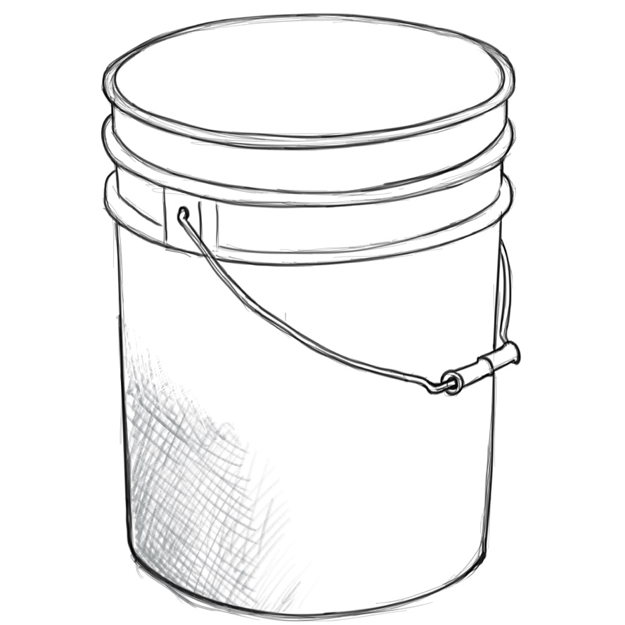
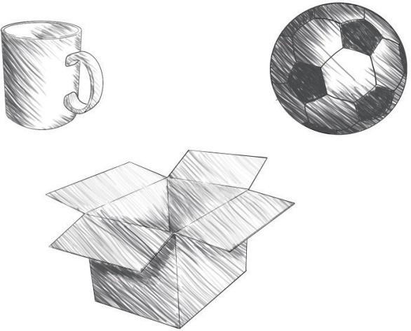

There are several shading techniques used in drawing. Some of them include hatching, cross-hatching, smudging, dotting and scribbling.
Hatching: This is a technique of shading by drawing parallel lines in the same direction. When the lines are drawn closer together, they form darker values and when drawn with space between lines a lighter value is created. Figure 2.22 shows hatching shading technique.
